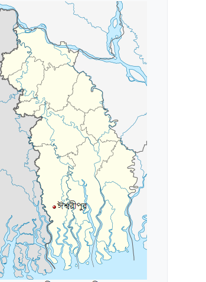

ঈশ্বরীপুর ইউনিয়ন
এক নজরে ঈশ্বরীপুর ইউনিয়নের মৌলিক তথ্য

| আয়তন ১৯ বর্গ কিঃমিঃ | গ্রাম সংখ্যা ০৭টি |
| মৌজা সংখ্যা ০৭টি | সড়ক ১৬৬ কিঃমিঃ |
| পাকা সড়ক ২৬কিঃমিঃ | কাঁচা সড়ক ১৪০ কিঃমিঃ |
| মোট জনসংখ্যা ৪০,২০২ জন | মোট ভোটার ২১,৩২৩ জন |
| মোট পরিবার ৬,৯৯৬ টি | গির্জা ০১টি |
| ইপপিআই কভারেজ ৯৫% | সরঃ চিকিৎসা কেন্দ্র ০২টি |
| বে-সরঃ চিকিৎসা কেন্দ্র ০১টি | নলকুপ ৪০টি |
| পি এস এফ ৫১টি | রেইন ওয়াটার হারভেষ্টিং ০৫টি |
| ধর্মীয় কমিউনিটি মুসলিম ও হিন্দু | মুসলিম ৭৪% |
| হিন্দু ২৩% | অন্যান্য ০৩% |
| শিক্ষার হার ৫৫.০৪% | সরকারী প্রাথঃ বিদ্যাঃ সংখ্যা ১০টি |
| রেজিঃ প্রাঃ বিদ্যাঃ সংখ্যা ১১টি | মাধ্যমিক বিদ্যাঃ সংখ্যা ০২টি |
| নিম্ন মাধ্যমিক বিদ্যাঃ সংখ্যা ০২টি | নিম্ন মাধ্যঃ বালিকা বিদ্যাঃ সংখ্যা ০২টি |
| বিভিন্ন ধরণের মাদ্রাসা ০৮টি | টেকনিক্যাল কলেজ ০১টি |
| মসজিদ ৬১টি | মন্দির ৩৪টি |
| ঈদগাহ ৩২টি | শ্মশান ১০টি |
| ঐতিহাসিক স্থান ৪টি | বনায়ন ১৫ কিঃমিঃ |
| বাজার ০১টি | হাট ০৩টি |
| প্রধান ফসল ধান, মাছ | উন্মুক্ত পুকুর ৬১১টি |
| খালের সংখ্যা ১২টি | মুক্তিযোদ্ধার সংখ্যা ০৯জন |
| ভোটার নিবন্ধন ও জাতীয় পরিচয় পত্র তৈরী ১০০% |